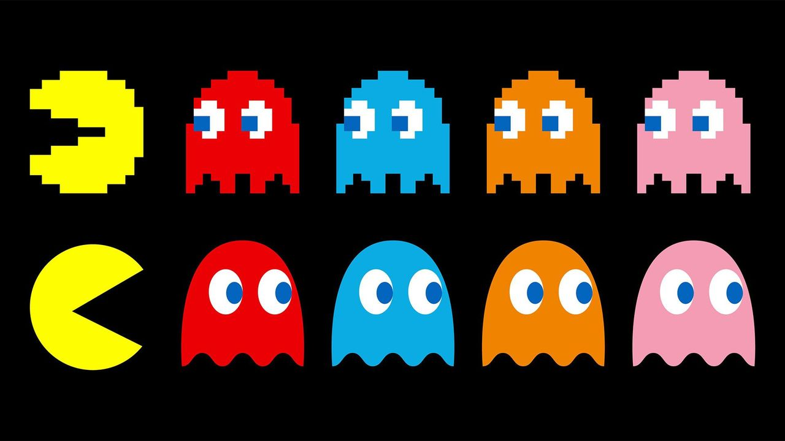

|| नमः पार्वती पतये हर हर महादेव ||
Education
Soft Skills
Experience
FGOIKMeans is a hybrid clustering algorithm that integrates Fungal Growth Optimization with
K-Means to improve centroid initialization. It enhances clustering accuracy, convergence speed
and stability. It effectively overcomes limitations of traditional K-Means clustering method.
Quality Improvement : ~18.92%
Self-Adaptative Improved-FGO is a clustering algorithm which contains Opposition-based Initialization, Adaptive Strategy Selection and
Multiple Search Strategies. The novelty lies in an improved, adaptive FGO framework with opposition-based initialization
and multi-strategy optimization.
Quality Improvement : ~30.78%
This work has been accepted for publication by Knowledge and Information Systems (Springer Nature).
Publication links, DOIs and bibliographic references will be updated upon final release.
Engineered an end-to-end bi-directional translation framework converting sign language into English text and vice-versa. Extracted high fidelity 3D spatial temporal hand, face and body pose landmarks to optimize feature representation and reduce computational overhead.
Built on Pygame with a matrix-backed board representation (8×8), raycasted collision detection for sliding pieces, coordinate-to-screen blit rendering, and turn-based state synchronization.
Classic arcade snake built with Pygame, featuring discrete grid-based movement, dynamic body segmentation, collision handling and background audio integration.

LIVETile-based canvas arcade game featuring Manhattan-distance pathfinding AI, buffered directional input, AABB collision detection and dynamic state-driven power pellet modes.
Looking to build something great or just swap ideas ??
Let's connect—the coffee's on me.